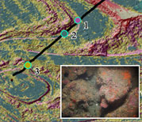

CSMP Products
CSMP map products are generated in a 3 tiered process with each data tier being constructed from the previous. One finalized, the completed GIS-ready CSMP data layers are made available for public download from the online Data Catalog.
Foundation Data -Tier 1 Products
The first tier consists of the basic survey data such as xyz bathymetry grids and backscatter (substrate) mosaics, the minimum data sets needed to support basic habitat classification. Multibeam bathymetry data collected by SFML and FPI provides these foundation data for the derived data products at the other tier levels. The first tier data sets are efficiently converted into second tier products in GIS using automated numerical derivatives including autoclassification of substrates and surface models based on parameters (slope, aspect, contours, relief, etc.).
GIS Products -Tier 2
Second tier map products include those that are derived through semi/automated GIS processes from the Tier 1 data (bathy soundings and backscatter intensity values). GIS product derivatives created by SFML from the bathymetry digital elevation models (DEM) include shaded relief imagery in grey scale and colored by depth, as well as GIS analyses of rugosity, slope and topographic position index (TPI), and substrate (habitat) analyses. These products are also made available to the MLPA Initiative for use in the MPA-designation process. FGDC-compliant metadata files are generated for each final product file to document the processing steps used in the production of derivative products.
Data Download
Map Folios -Tier 3
The third product tier is comprised of fully interpreted, classified and attributed geologic and habitat maps. Third tier maps products integrate the bathymetry, backscatter, sub-bottom profile data into a single interpretation for broad areas. The USGS partners are creating folio (reference) map sheets highlighting aspects of various seafloor characterization and data analysis for these larger areas. Additional detail on the folio maps is available on the USGS CSMP web site.
USGS uses maximum likelihood supervised classification built into ArcGIS (Cochrane and Lafferty, 2002) and hierarchical classification built into ERDAS Imagine (Dartnell and Gardner, 2004a) to generate classified rasters. In either case the classification is supervised by creating statistical signature files for each bottom type observed in the video. Common examples of bottom type include thick bioturbated muddy seafloor, sand with bedforms, flat bedrock with thin sand cover, boulder, high-relief rocky seafloor. The signatures represent the range of values of all the tier 2 rasters generated within small hand drawn polygonal areas chosen using the video points.
The classified raster is converted to polygon features. These polygons may be further subdivided into bathymetric zones if these are thought to represent important habitat zonations, and microhabitat zones if video data points provide microhabitat information for a given polygon. Attributes are added to the polygons for geologic unit, and habitat attributes from megahabitat to microhabitat (Greene et al. 1999). These attributes allow the design of GIS queries that reveal patterns and summaries of geographic information useful to managers (Cochrane et al., 2005a).
Example CSMP Folio Map Products
Ground-Truthing Character maps are ground-truthed for content accuracy using sediment grab samples and video imagery from ROV surveys.
References
Cochrane, G.R., and K. D. Lafferty, 2002, Use of acoustic classification of sidescan sonar data for mapping benthic habitat in the Northern Channel Islands, California. Continental Shelf Research, 22:683-690.
Cochrane, G.R., J.L. Butler, and G.E. Davis, 2005a. Refining estimates of potential White Abalone habitat at northern Anacapa Island California using acoustic backscatter data, in Barnes, P.W., and Thomas, J.P. (eds) Benthic Habitats and the Effects of Fishing, American Fisheries Society Symposium vol 41, p. 161-164.
Dartnell, P., and Gardner, J.V. 2004a. Predicting seafloor facies from multibeam bathymetry and backscatter data. Photogrammetric Engineering and Remote Sensing. Vol. 70, No.9, pp 1081-1091.
Greene, G.H., Yoklavich, M.M., Starr, R.M., O‘Connell, V.M., Wakefield, W.W., Sullivan, D.E., McRea, J.E., and Cailliet, G.M., 1999, A classification scheme for deep seafloor habitats: Oceanologica Acta, v. 22, p. 663-678
 Map generation products follow a 3-tiered approach-- from basic survey data to highly detailed habitat classification.
Map generation products follow a 3-tiered approach-- from basic survey data to highly detailed habitat classification. Maverick's - Half Moon Bay, CA
Maverick's - Half Moon Bay, CA